Execute → forget
Every run can be good, but the next run starts from the same generic state.
Stop deploying agents that execute and forget. Give a narrow agent a self-maintained mental model, close the Act → Learn → Reuse loop, and make useful work improve the next run.
Mastery promise. By the end, you will be able to distinguish an expert from an ordinary agent or a meta-agentic builder, trace the complete learning loop through real course files, treat expertise as a fallible mental model rather than truth, improve the learning mechanism without hand-editing its output, and defend where an expert is worth the risk.
Imagine hiring the same specialist one thousand times, but erasing their working knowledge after every shift. They may be brilliant. They may have excellent tools. They may even solve each request. Yet the organization does not become more capable because the specialist carries nothing useful into the next run.
That is the structural failure this lesson names. Context engineering can give an agent a better starting packet. Agentic prompt engineering can give it a better procedure. Sub-agents can isolate purposes. Skills can package repeatable work. None of those moves, by itself, causes the system to learn from the useful work it just performed. If the next run begins from the same starting state, execution scales but expertise does not compound.
Dan calls this the most controversial lesson of Agentic Horizon because the repair asks you to accept an unusual artifact: a file the agent writes and maintains as its own topic-specific mental model. The file is not documentation. It is not the source of truth. It may be incomplete or wrong. The agent loads it as a fast index, checks it against the code that actually runs, performs useful work, and then updates the index through a controlled self-improve prompt. The value lives in the operating loop, not in pretending the file is perfect.
This chapter follows the final checked-out course tree at agentic-horizon/agent-experts, not only the screen recording. That distinction matters. The recording shows the WebSocket event counter being built; the final repository already contains the counter, its plan, and the learned expertise entries. The lab therefore treats that demo as completed-loop archaeology and grades a fresh seed separately. The recording calls one self-improve prompt 99 lines; the current files are 179 and 190 lines. The chapter reports both honestly and uses the repository counts for operations.
If the mental model is wrong, improve the self-improve rubric and rerun it. Editing expertise.yaml directly repairs one artifact while leaving the learning system broken.
A normal agent can produce an excellent answer and still fail as a learning system. The test is not whether run one succeeds. The test is whether run one changes the starting position of run two.
1 · Hook — run one thousand
Point a fresh agent at billing. It finds the calculation path, notices the migration that changed a revenue field, understands which Pydantic model mirrors the table, and answers correctly. The session ends. Tomorrow, another fresh agent repeats the same search. Nothing about yesterday’s useful investigation is available as a starting model. By run one thousand, you have purchased one thousand rediscoveries.
This is worse than ordinary forgetfulness because repeated use normally creates organizational advantage. A product records analytics, exposes patterns, and improves an algorithm. A team captures review findings and changes a checklist. A specialist remembers where the sharp edges are. A cold-start agent can execute more work without creating any of that compounding state.
2 · Picture — flatline versus climb
Every run can be good, but the next run starts from the same generic state.
Each useful action can refine a reusable mental model for the next execution.
The right-hand path does not promise monotonic truth. A mental model can contain false expertise. The diagram shows a changed starting point, not guaranteed correctness. Correctness still comes from revalidating the model against the live code.
3 · Story — Dan names the missing capability
Between roughly 0:11 and 3:25, the video stays on the conceptual problem rather than a code artifact. Dan contrasts software that gets better through use with agents that start fresh, then compresses the failure into one sentence: “Your agents forget. And that means your agents don’t learn.” The frame plan intentionally leaves this beat unframed; a screenshot of narration would add less than the flatline map above.
The important word is not forget alone. A clean session can be desirable. Context isolation protects focus. The failure is that the system has no deliberate path for carrying validated, domain-specific learning forward. Forgetting becomes fatal when nothing outside the transient context captures the useful result.
4 · Name it
Structural forgetting means the execution architecture discards domain understanding at the session boundary. It is not a complaint that the context window is too small, the prompt is weak, or the model is unintelligent. Those dimensions affect a run. A learning path affects what survives between runs.
5 · Worked example — repeated database archaeology
Without expertise, a database question begins with broad search: locate model files, find migrations, infer table relationships, identify query patterns, and reconstruct how shared models reach apps. The course database expert instead begins at .claude/commands/experts/database/expertise.yaml. That file already points toward the six Pydantic/table models, migrations, connection and query patterns, and synchronization mechanism.
The agent does not stop at the summary. It uses the summary to choose which real files to read, then verifies claims against apps/orchestrator_db/models.py, migrations, and related implementation. Reuse changes the search from “discover the whole domain blindly” to “start from a compact map and test it.” Learn later updates that map when validation finds meaningful drift.
6 · You try — find your rediscovery tax
You have identified an expertise candidate only if the stored map would reduce rediscovery and you can name the ground truth used to validate it.
7 · Common fail + fix
Symptom: every fresh run receives more raw repository content, but no mechanism records what the previous run found useful. Token volume rises; the cold-start architecture stays unchanged.
Fix: separate transient working context from persistent learned state. Store a narrow mental model outside the conversation, load it only when the domain is active, validate it against code, and update it through an explicit Learn step.
8 · Current practice
9 · Retrieval
What problem can excellent context and prompt engineering fail to solve?
They can improve the current execution while still leaving no mechanism that stores validated domain learning for the next run.
Why is a clean context window not itself the enemy?
Fresh context can protect focus. The problem is having no deliberate persistent channel for useful learning outside that transient context.
What two conditions make stored expertise valuable rather than stale documentation?
It is loaded as a narrow navigation model, and its claims are revalidated against the live code before use.
10 · Teach-back
Explain the run-one/run-one-thousand thought experiment in ninety seconds. Pass if your listener understands why higher answer quality does not create compounding expertise and can name the missing persistent channel.
An expert is not a model tier or a prompt length. It is a generic agent whose operating procedure makes learning unavoidable after useful work.
1 · Hook — remove the costume
It is tempting to imagine an expert as a heavily customized agent: a larger model, a domain persona, a long system prompt, a library of tools, perhaps a vector database. Dan’s two codebase examples remove that costume. They use ordinary agents. Their expertise comes from a persistent topic model and a procedure that reads, validates, acts, and updates.
This is useful because it makes the mechanism portable. You can later package it as a command, Skill, sub-agent, SDK workflow, or another abstraction. If the loop is missing, the package does not create expertise. If the loop is present, a plain prompt file can teach the idea without hidden machinery.
2 · Picture — one changed arrow
prompt → execute → answer → session ends
The result may be excellent; no topic model is maintained for next time.
reuse → act → learn ↻
Useful work updates a mental model that the next execution loads and checks.
3 · Story — the whole distinction in one word
At about 2:02, Dan says, “One executes and forgets, the other executes and learns.” He adds that you do not need to tell an expert to learn every time; learning is in its DNA. In implementation terms, “DNA” is not mystical. It means the Learn step is part of the reusable workflow rather than an optional reminder a human remembers to type.
A human specialist does not become an expert by receiving a larger inbox. They update a narrow mental model through repeated contact with one domain. The agent expert mirrors that shape: narrow scope, repeated validation, useful action, persistent revision.
4 · Name it
The definition excludes three common look-alikes. A strong generic agent is not an expert if it forgets. A memory file is not an expert because a file cannot operate the loop. A meta-agentic builder is not an expert merely because it creates prompts or agents. Expertise names a lifecycle.
5 · Worked example — classify the database agent
The database directory contains question.md, self-improve.md, and expertise.yaml. The question prompt supplies Reuse: read the mental model, validate it, then answer without changing files. The self-improve prompt supplies Learn: compare the model with implementation and update discrepancies. No prompt inside that expert performs a database code change, so the expert lacks its own Act step.
Dan still calls that arrangement acceptable. A read-only domain questioner can be extremely valuable. Precision matters: it is a partial expert because its own workflow has Reuse and Learn but no domain-changing Act. It can still learn from database changes made elsewhere when self-improve runs.
6 · You try — define without status words
Write one sentence that defines an agent expert using only observable architecture. Your sentence must name the persistent artifact, how it is maintained, and what happens before the artifact is trusted. Then test it against three cases: a large model with no memory, a Skill that generates prompts, and the database partial expert.
7 · Common fail + fix
Symptom: a prompt is named security-expert.md, given an authoritative persona, and run on a premium model. It never updates a topic model after work.
Fix: ignore the name and trace the lifecycle. Where is the mental model? Which prompt reads it? Which step validates it? Which useful action creates new evidence? Which controlled step updates it? Missing answers reveal the actual architecture.
8 · Current practice
Commands, Skills, sub-agents, MCP-backed tools, SDK processes, and managed agents can all host parts of this pattern. Dan’s own closing lens is the core four: context, model, prompt, tools. Packaging should improve discovery, isolation, or deployment. It should not obscure whether learned state is narrow, validated, updated, and reused.
9 · Retrieval
What one verb distinguishes Dan’s expert from a generic agent?
Learns: useful execution updates a persistent mental model for later reuse.
Why are model size and prompt length insufficient definitions?
They can improve a single execution without creating any persistent learning lifecycle between runs.
Why can the database agent be both an expert and partial?
It maintains and reuses expertise, but its own workflow does not perform a domain-changing Act.
10 · Teach-back
Complete this aloud: “An agent expert is not ___; it is ___.” Pass if you replace status language with a traceable lifecycle and explain the partial-expert nuance.
The right objection arrives immediately: “Now I have code, comments, plans, documentation, and another file that can drift.” The answer is not to deny drift. It is to give the file a different job.
1 · Hook — the duplicate-docs alarm
If expertise.yaml claimed authority over the database, every code change would create a synchronization burden and every disagreement would become ambiguous. Which artifact wins? Dan rejects that architecture. The code that runs remains the source of truth. Expertise is a deliberately compressed, fallible working model that helps an agent navigate toward the right code faster.
Your own memory works similarly. You do not carry an executable source of truth for a codebase in your head. You remember boundaries, names, risks, and places to look. When precision matters, you reopen the implementation. The expertise file externalizes that working model for an agent.
2 · Picture — authority and navigation
3 · Story — watch Reuse become safe
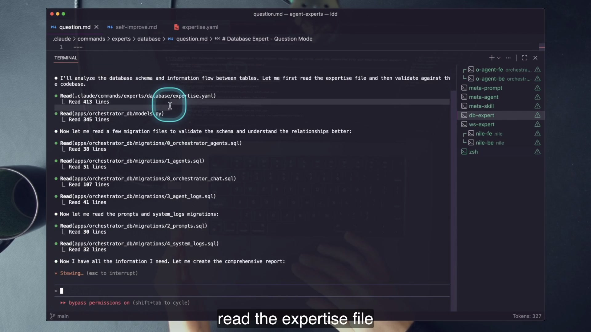
models.py and migrations to validate its map. The repository file itself contains 412 lines.The question prompt encodes the safety rail twice: use expert knowledge to validate the expertise path against the codebase, then review, validate, and confirm it during the workflow. That repetition is the difference between a quick index and a hallucination cache.
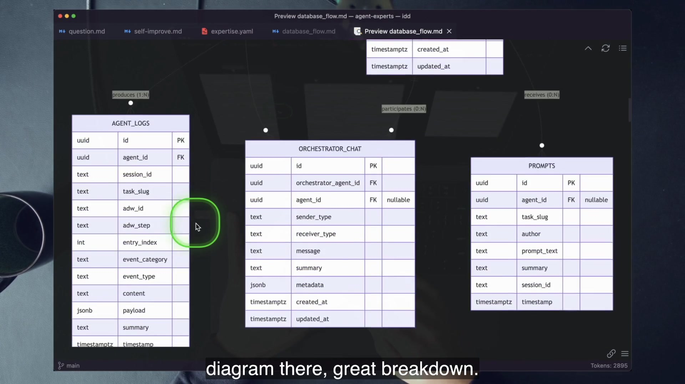
4 · Name it
A mental model is an evolving data structure that helps one agent reason about one domain. It is useful because it is smaller and more navigable than the codebase. It is safe only when the workflow treats every stored claim as a hypothesis to confirm.
5 · Worked example — a real drift signal
The final WebSocket expertise file says chatService.ts contains 194 lines in two locations. The checked-out source contains 193. This is not evidence that expertise is useless; it is evidence that the mental-model framing is necessary. A line count is a navigation hint with a drift surface, not executable truth.
A safe expert opens the cited file, sees the current line layout, and bases its answer on the implementation. A later self-improve pass may repair the stale count if it is worth preserving. If an engineer trusted the YAML blindly because it looked precise, the extra precision would make the failure worse.
6 · You try — perform the four-step trace
.claude/commands/experts/websocket/expertise.yaml and find a chatService.ts reference.wc -l on the actual source file.Do not edit the expertise file. You are practicing validation, not bypassing the learning mechanism.
7 · Common fail + fix
Reject everything: call expertise duplicated documentation and throw away the navigation advantage. Trust everything: treat exact-looking YAML as authoritative and skip code validation. Both mistakes assign the file the wrong role.
Fix: preserve the asymmetry. The mental model proposes where to look. The code decides what is true. The answer cites the code. The Learn step updates the model through its maintenance prompt.
8 · Current practice
Current Claude Code documentation explicitly recommends Skills for multi-step procedures that do not need to live in startup context, while CLAUDE.md holds facts and rules that should guide every session. That strengthens Dan’s design conversation: broad always-on instructions, automatic repository memory, and a detached domain model have different loading and maintenance semantics. Use the smallest scope that matches the job.
9 · Retrieval
What is the source of truth in this lesson?
The code that actually runs, including models, migrations, services, stores, and components.
What is the expertise file for?
A compact, evolving mental model that helps the agent navigate to relevant evidence quickly.
Why is the 194-versus-193 mismatch pedagogically valuable?
It demonstrates real drift and proves that exact-looking expertise must still be checked against source.
10 · Teach-back
Use your own memory as the analogy. Explain how a mental model makes you faster without becoming authoritative, then map each part of the analogy to expertise.yaml, code validation, and the final answer.
The name sounds abstract until you split it into three jobs. Each job is already visible in the course repository; the expert is their composition.
1 · Hook — unpack the mouthful
“Self-improving template meta prompt” can sound like a label placed on ordinary prompting after the fact. Dan makes it mechanical. A meta prompt builds another prompt. A template gives the output a fixed purpose and structure. A self-improving prompt updates itself, related prompts, or an isolated file with information needed on a later execution. Combine the three and you have the maintenance machinery around expertise.
The decomposition matters because each part has a failure it prevents. Meta-generation prevents you from hand-authoring every artifact. A template prevents generated artifacts from becoming shapeless. Self-improvement prevents the useful structure from freezing at the moment it was created.
2 · Picture — the three-part equation
3 · Story — a prompt builds a prompt
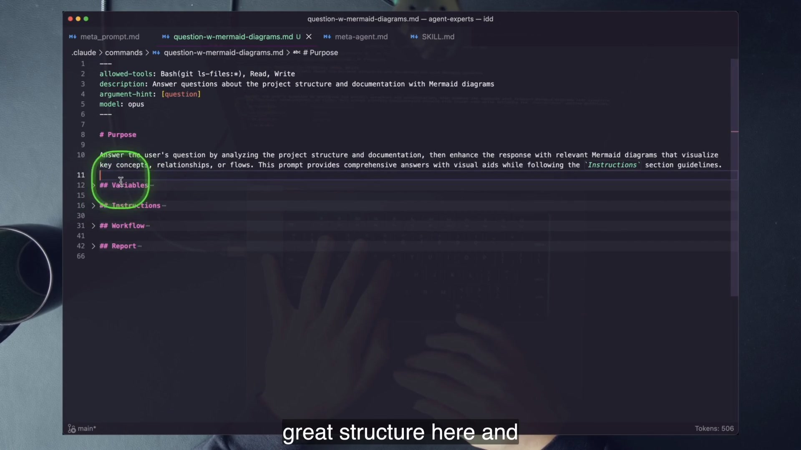
meta_prompt.md produced question-w-mermaid-diagrams.md, including frontmatter, purpose, variables, instructions, workflow, and report. This is “prompts build prompts” as a file, not a metaphor.The artifact demonstrates meta plus template: another prompt was generated, and it follows a specified shape. It does not yet demonstrate self-improvement. Nothing about that new command updates automatically after it answers a question. The missing property prepares the next section’s distinction between meta-agentics and experts.
4 · Name it
5 · Worked example — map the definition to files
.claude/commands/meta_prompt.mdShows the meta pattern: produce a command in a specified format.
experts/database/question.mdShows the template: a stable purpose, variables, instructions, workflow, and report for read-only reuse.
experts/database/self-improve.mdShows self-improvement: compare expertise with code and update the isolated YAML for next time.
experts/database/expertise.yamlHolds the evolving topic model. It is the maintained output, not the learning procedure.
Do not over-literalize the phrase “prompt that builds prompts.” In the expert, the self-improve prompt may output a revised knowledge file rather than a brand-new command. The durable idea is a structured prompt system that produces or updates the agentic artifact used on a later execution.
6 · You try — label the repository
7 · Common fail + fix
Symptom: you call expertise.yaml the self-improving prompt, or assume the file can maintain itself. When it drifts, you edit the state directly because no learning procedure is conceptually separate.
Fix: keep two artifacts distinct. The expertise file is mutable learned state. The self-improve prompt is the stable maintenance rubric that reads code, decides what matters, updates state, enforces limits, and validates syntax.
8 · Current practice
Current Claude Code documentation says custom commands have been merged into Skills while existing .claude/commands/ files continue to work. A Skill can bundle SKILL.md, reference files, and invocation controls, making it a natural container for an expert. The raw command files in this lesson remain the clearer first teaching form because every stage is visible without packaging magic.
9 · Retrieval
What does the meta part do?
It builds another prompt or agentic artifact.
What does the template part add?
A fixed purpose and structure rather than unconstrained generated text.
What makes the system self-improving?
A controlled prompt updates isolated learned state for a later execution.
10 · Teach-back
Teach the phrase without using the phrase. Describe the generator, fixed structure, maintenance procedure, and learned-state artifact. Then reveal the formal name only after your listener can point to each role.
A prompt can build prompts, an agent can build agents, and a Skill can build Skills. All three are powerful. None is automatically an expert.
1 · Hook — useful output is not learning
Run a meta prompt and it writes a useful command. Run a meta agent and it creates a planner. Run a meta Skill and it scaffolds a startup workflow. Each system takes action and increases your engineering output. Yet after shipping the artifact, its own model of how to do the job has not changed. Repeating the same request tomorrow begins from the same factory instructions.
This is the trap Dan stages before introducing experts. If “creates something” were enough, every code-writing agent would qualify. Learning requires a state transition that survives the run and is reused by the system later.
2 · Picture — three factories, one missing wire
request → command.mdGenerates a structured custom command.
description → agent.mdGenerates a sub-agent with frontmatter and purpose.
workflow → SKILL.mdGenerates a reusable Skill package.
3 · Story — follow the artifacts into the tree
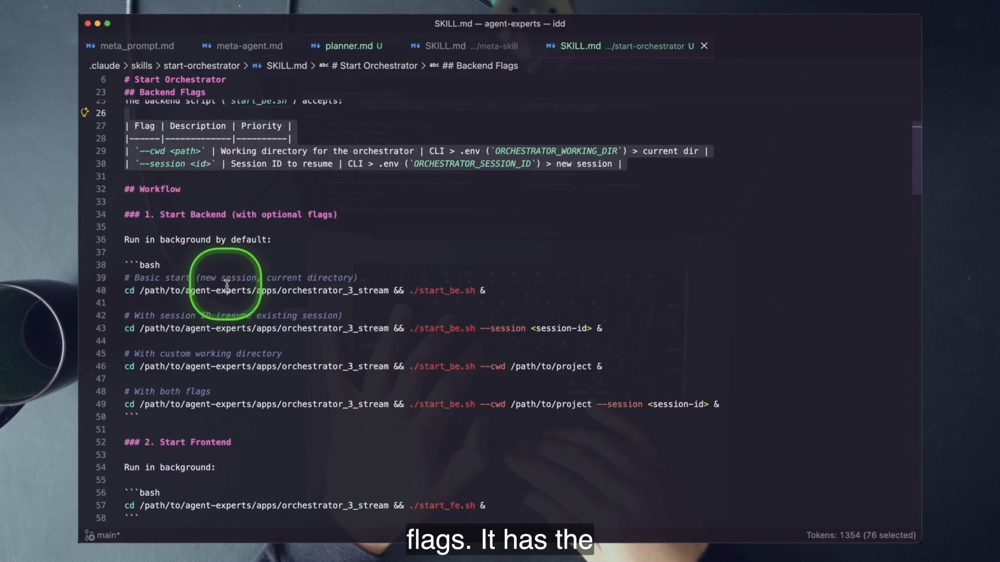
.claude/skills/start-orchestrator/SKILL.md, including flags and startup commands. It is a reusable artifact, but generating it did not update the generator’s expertise.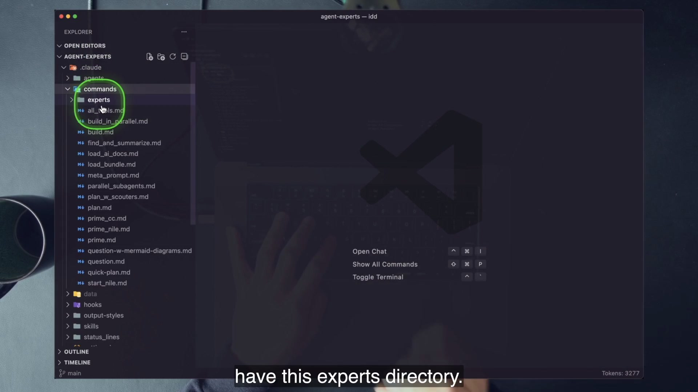
experts directory appears beside the meta-agentic artifacts. Physical proximity does not erase the lifecycle distinction: the experts add persistent learned state and maintenance prompts.The third artifact is .claude/agents/planner.md, generated by meta-agent.md. It delegates to the base planning command, making it easy to scale planning through sub-agents. Like the generated question command and startup Skill, it acts. Nothing in its own workflow records what it learned about planning for the next invocation.
4 · Name it
Meta-agentics are atoms of the agentic layer. They increase how quickly you can create repeatable mechanisms. An expert may be built from those atoms, but the category changes only when Learn and later Reuse are wired into the lifecycle.
5 · Worked example — apply the expert test
start-orchestratorThe Skill knows how to start the backend and frontend and open the application. That is a useful, repeatable action. Ask the expert test: after it encounters a stale port, does it update a narrow mental model through a controlled maintenance step? Does the next run load and validate that learned state? In the demonstrated artifact, no.
The final repository even contains evidence of drift: the Skill claims a backend port of 8002 with a fallback, while .env.sample, the README, and start_be.sh establish 9403 as the default. This does not make Skills bad. It shows exactly what a Learn/validation loop would need to address.
6 · You try — run the two-question test
For meta_prompt.md, meta-agent.md, and meta-skill/SKILL.md, write two answers: the artifact each one produces, and the persistent state it automatically updates for its next execution. The second answer should be “none” for all three shipped demonstrations. If you find a file, prove that a later run reads it and that a maintenance rubric updates it.
7 · Common fail + fix
Symptom: the system produced a better prompt than you expected, so you say it learned. But no durable state changed; you merely observed a strong stochastic output.
Fix: demand an artifact-level trace. Name the state before the run, the useful evidence produced during the run, the persisted update after the run, and the read path on the next run. Without all four, improvement is an impression.
8 · Current practice
Current Skills load on demand and can carry supporting files, which makes them a good packaging surface for topic-scoped expertise. The lifecycle test still wins. A Skill containing a static procedure is a reusable procedure. A Skill that loads, validates, updates, and reuses a narrow mental model can host an expert.
9 · Retrieval
What are the three meta-agentic factories?
Meta prompts build prompts, meta agents build agents, and meta Skills build Skills.
Why are the demonstrated factories not agent experts?
They act by creating artifacts but do not automatically update and later reuse persistent learned state.
What repository drift makes the distinction concrete?
The generated start-orchestrator Skill’s backend-port claim differs from the final repository’s 9403 default.
10 · Teach-back
Compare a factory with a craftsperson. The factory can repeatedly produce an artifact; the craftsperson updates a mental model from the work. Map the analogy to one meta-agentic file and one expert directory.
Everything in the lesson collapses to three verbs. The verbs are simple enough to remember and strict enough to expose a fake expert.
1 · Hook — three boxes or it does not compound
Suppose an agent builds a correct WebSocket feature. If no Learn step turns that change into updated domain knowledge, the next agent must rediscover it. Suppose self-improve updates a YAML file but no Reuse step reads the file before later work. The knowledge exists but has no effect. Suppose Reuse and Learn exist but the expert never performs a domain-changing action. The system can query and refresh expertise, but its own loop is partial.
2 · Picture — the minimal learning machine
The loop returns from Reuse to a later Act. The mental model shortens navigation; code validation protects correctness; useful action creates new evidence; self-improve decides whether that evidence deserves persistence.
3 · Story — the branded frame
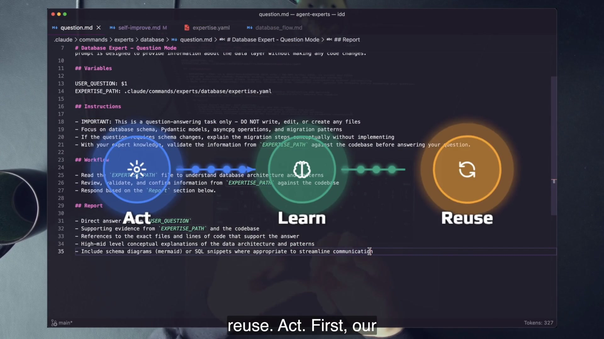
4 · Name it
5 · Worked example — the counter loop
expertise.yaml and critical files before delegating to the base plan command.plan_build_improve.md passes the generated plan to .claude/commands/build.md, which changes the real frontend so every WebSocket message increments a session counter shown in the header./experts:websocket:self-improve true, using the Git diff and code validation to update WebSocket expertise.The final course tree preserves every layer: the plan in specs/websocket-event-counter-nav-bar.md, the source changes across chatService.ts, orchestratorStore.ts, useHeaderBar.ts, and AppHeader.vue, plus learned entries in WebSocket expertise.
6 · You try — classify before reading labels
Write Act, Learn, and Reuse as column headers. Place build.md, both self-improve.md files, both question.md files, WebSocket plan.md, and plan_build_improve.md into the ledger. For the orchestrator, distinguish “contains a stage” from “is the base prompt that performs the stage.”
7 · Common fail + fix
Symptom: self-improve reports that expertise is already aligned, so you assume learning failed and demand a file change. The agent adds low-value prose merely to satisfy the expectation.
Fix: grade the validation procedure, not diff size. The shipped self-improve prompt explicitly says a thorough search may find nothing to do and that this is perfectly acceptable. Useful restraint is part of expertise maintenance.
8 · Current practice
A command chain, a Skill, an SDK process, or a managed session can implement the loop. Modern surfaces add structured outputs, hooks, permissions, deployment, and persistent sessions. None changes the diagnostic. Find the useful action, the validated update to learned state, and the path that loads that state next time.
9 · Retrieval
Name the loop and the key adjective attached to Act.
Act, Learn, Reuse; the action must be useful.
What is a valid outcome of a Learn pass?
After thorough validation, it may report that there is nothing useful to update.
Why is stored expertise without Reuse incomplete?
The knowledge has no path into later decisions, so it cannot improve the next execution.
10 · Teach-back
Teach the loop without naming Claude, YAML, commands, or Skills. Pass if your listener can apply the three-stage test to an unfamiliar learning agent in another technology.
A useful mental model is precise enough to navigate and incomplete enough to fit. Its structure should reflect the domain, not your urge to write comprehensive documentation.
1 · Hook — what belongs in the file?
If you copy every implementation detail into expertise, you create a slower duplicate of the code with a larger drift surface. If you store only a one-paragraph overview, the agent still has to search blindly. The useful middle contains architecture, high-value operations, sharp edges, and exact locations that help the agent reach ground truth quickly.
The shape is domain-owned. A database model emphasizes tables, migrations, queries, and synchronization. A WebSocket model emphasizes event types, connection lifecycle, broadcast paths, frontend stores, monitoring, and known issues. Dan seeds loosely because the agent’s repeated work should reveal which categories help it operate.
2 · Picture — spine plus guardrails
Exact file:line references shorten navigation, but every reference remains a hypothesis to verify.
MAX_LINES: 1000 forces prioritization. Least-critical content is trimmed before the model becomes a second codebase.
Dan prefers YAML; the extract also names TOML, JSON, CSV, and database JSONB. Choose what agents can read and validate reliably.
3 · Story — fold the file to its skeleton
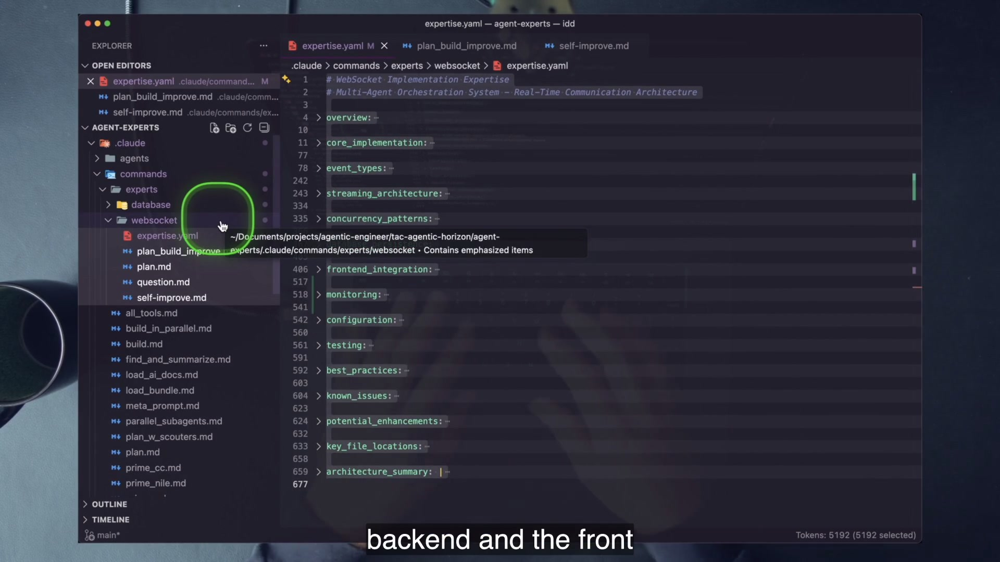
Dan describes the file as roughly 650 lines, an honest on-camera approximation. The exact checked-out counts are more useful for the lab: database expertise is 412 lines, WebSocket expertise is 676, and both self-improve prompts cap the mental model at 1000. The database file reportedly carries 44 specific line references, making the map directly actionable.
4 · Name it
5 · Worked example — one field with operational value
The learned WebSocket expertise records the session counter across the event interception, store state, increment callback, reset behavior, composable, and header display. An entry such as websocketEventCount is useful because it does not merely say “there is a counter.” It points to where the count lives, where every message increments it, and when connection lifecycle resets it.
A future question—“Why did the count return to zero?”—can begin at those locations instead of grepping the entire frontend. The agent must still open the current files. The known 194-versus-193 line-count drift is a reminder that jump targets age.
6 · You try — evaluate one section
7 · Common fail + fix
Symptom: the expertise file grows like generated documentation. It repeats code, records narrative summaries of past work, and spends tokens on low-value edge cases. Reuse becomes slower, and important operations disappear inside volume.
Fix: make the self-improve rubric prefer actionable, high-value expertise; enforce a hard line limit with wc -l; trim redundant examples and low-priority detail; retain the operations, invariants, risks, and jump targets that change agent behavior.
8 · Current practice
For a high-stakes domain, treat the expertise update as a reviewable artifact even when the agent owns the write. Inspect what was added, removed, and reworded; spot-check citations against code; and rerun representative questions. This is an editorial practice overlay, not a claim that the course implements a production evaluation harness.
9 · Retrieval
Why carry exact file and line references?
They let the agent jump to likely ground truth and revalidate quickly instead of searching blind.
What prevents unlimited growth in the shipped experts?
A MAX_LINES value of 1000, line-count checks, and instructions to trim least-critical content.
Must expertise be YAML?
No. YAML is Dan’s preference; the lesson permits other readable, validatable formats.
10 · Teach-back
Explain why a good expertise file is deliberately incomplete. Pass if your answer includes navigation value, ground-truth validation, a finite context budget, and a concrete reason to keep line references despite drift.
The expertise file does not improve itself. A stable rubric tells an agent how to compare mental model with code, decide what matters, update the model, and prove the artifact is still usable.
1 · Hook — repair the teacher
Your first impulse is efficient in the small: open the YAML, fix the line, move on. That produces a correct file once. The next run uses the same flawed maintenance rubric and recreates the same class of error. You have repaired an output while preserving the system that generated it.
Dan’s golden rule moves the intervention one layer up. Change the self-improve prompt so the agent learns how to maintain that category of expertise, rerun it, and inspect the result. The improvement compounds because later updates inherit the better rubric.
2 · Picture — the seven-stage loop
3 · Story — the rubric on screen
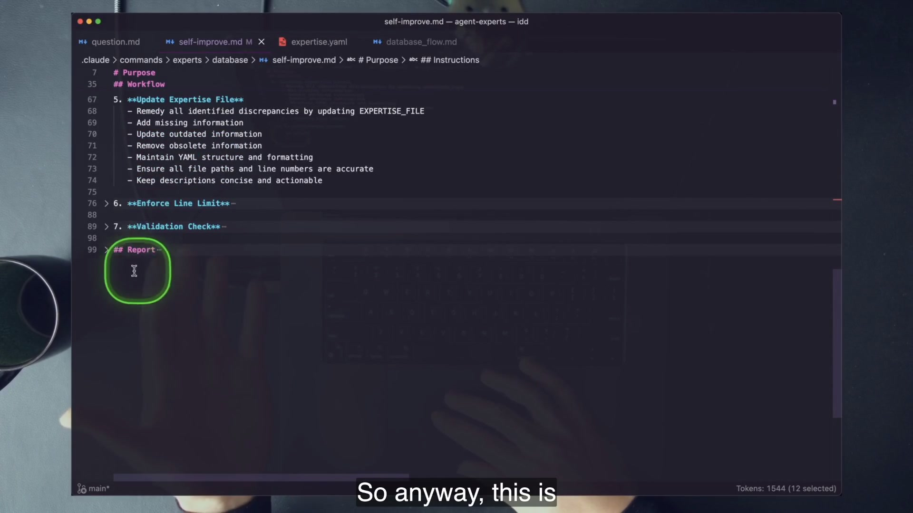
The WebSocket variant is 190 lines. The discrepancy is course-era detail rather than a conceptual conflict. What matters is the procedure: optionally inspect the Git diff, read the current model, validate against implementation, identify discrepancies, update useful expertise, enforce the size constraint, parse the YAML, and report. The prompt also states that a thorough pass may find nothing to do.
4 · Name it
5 · Worked example — improve a weak line-number policy
Suppose the WebSocket model records a counter field but repeatedly omits the connect and disconnect reset locations. The wrong repair is to add two lines under session_state by hand. The durable repair is to add a prescriptive instruction to WebSocket self-improve.md: for session-scoped state, record initialization, mutation, and every lifecycle reset location with validated references.
Then run /experts:websocket:self-improve false. Inspect the generated expertise diff, open the cited code, and test whether the rule affected the desired category without bloating unrelated sections. If it did not, improve the rubric again. You are training the maintainer, not curating its output one line at a time.
6 · You try — audit the seven stages
self-improve.md and find CHECK_GIT_DIFF, FOCUS_AREA, EXPERTISE_FILE, and MAX_LINES.The last comparison reveals inherited prompt drift. In the lab, the manual syntax check uses uv run --with pyyaml python to honor the repository rule.
7 · Common fail + fix
Symptom: every self-improve run must modify the file, seeding encourages a human-designed schema full of assumptions, or generated summaries of work accumulate as “expertise.” The file changes often but becomes less useful.
Fix: start the carrier blank or loosely seeded, let the agent discover a structure, permit stable passes, prioritize durable operations over work logs, and grade every update against real source evidence.
8 · Current practice
In billing, security, or other high-stakes domains, autonomous writing need not mean unreviewed promotion. A practical extension is to treat the learned-state diff like a pull request: validate syntax automatically, run representative expert questions, spot-check ground-truth citations, and require human review before the new mental model influences critical actions. The course demonstrates the primitive; this is the governance overlay.
9 · Retrieval
The mental model is wrong. What do you change?
The self-improve prompt or surrounding maintenance agentics, then rerun the system.
What do you refuse to change directly?
A non-empty expertise file, because direct edits bypass the learning mechanism.
Why can “nothing to do” be a passing result?
Learning is validated alignment, not mandatory churn; the model may already match the code.
10 · Teach-back
Explain “build the system that builds the system” with one concrete wrong fact. Show the tempting YAML edit, the rubric-level repair, the rerun, and the evidence that the learning mechanism improved.
The database expert can answer and refresh its model, yet it does not change database code. The WebSocket expert composes planning, building, and self-improvement into a complete loop.
1 · Hook — useful does not mean complete
Engineers often turn a taxonomy into a status ladder: complete is good, partial is defective. Dan resists that interpretation. A question expert that knows the database, validates its mental model, cites exact code, and never writes can be the right safety boundary. It is partial only in the literal sense that its own workflow contains no domain-changing Act.
That nuance also repairs an overstatement: “without Act there is nothing to learn from.” The database model can learn from changes made by other workflows. What it cannot do is close the entire Act/Learn/Reuse cycle inside one composed expert operation.
2 · Picture — compare file roles
Read-only expertise-guided questions plus a separate refresh mechanism.
question.mdself-improve.mdExpertise-informed plan, real build, and diff-aware self-improve in one workflow.
plan.md / question.mdbuild.mdself-improve.md true3 · Story — a one-shot composition
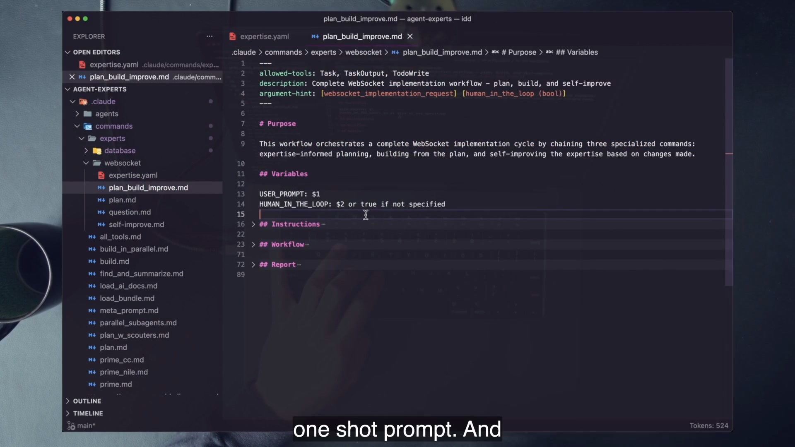
plan_build_improve.md composes three specialized commands. The WebSocket directory shows the orchestrator, two Reuse prompts, Learn, and the mental model; Act comes from the shared base build.md.The file’s purpose is explicit: run an expertise-informed plan, build from the returned plan, and self-improve expertise based on the changes. Each step must finish before the next begins. The final report combines the three results so the top-level workflow preserves a small, inspectable summary.
4 · Name it
5 · Worked example — the exact call chain
Task("/experts:websocket:plan [request]")
→ path_to_plan
Task("/build [path_to_plan]")
→ build_report
Task("/experts:websocket:self-improve true")
→ self_improve_report
compile final reportReuse Planning is seeded by WebSocket expertise and current critical files.
Act The shared build command changes the real application from the plan.
Learn The true flag focuses self-improve on the Git diff produced by Act.
6 · You try — label every file
Create a table with five roles: mental model, Reuse, Act, Learn, and orchestration. Classify every file under both expert directories plus the shared .claude/commands/build.md. Put plan_build_improve.md under orchestration and annotate that it invokes all three stages; do not pretend it is the low-level build prompt.
7 · Common fail + fix
Symptom: you add a code-changing prompt to a database question expert solely to make the checklist complete, expanding risk without a useful action requirement.
Fix: design to purpose. Keep read-only experts partial when the job is safe, evidence-backed analysis. Add Act only when the expert owns a useful domain-changing workflow and you can validate both the code change and the learned-state update.
8 · Current practice
Moving the prompts into a Skill or SDK process does not alter the classification. A Skill that answers and refreshes is partial. A headless workflow that plans, mutates the system, and updates validated learned state is complete. Keep the stage names as observability labels even if the implementation becomes code.
9 · Retrieval
Which stage is absent inside the database expert?
Act: its question prompt is read-only and no prompt in that expert changes database code.
Which exact prompt performs WebSocket Act?
The shared base .claude/commands/build.md, invoked by plan_build_improve.md.
Can a partial expert learn?
Yes. The database self-improve prompt can refresh expertise from code changes made elsewhere; the loop is partial because it does not perform its own Act.
10 · Teach-back
Compare the experts without saying one is better. Explain their purposes, permissions, stage coverage, and the exact condition under which you would add Act to the database expert.
The complete workflow can consume more context than one top-level agent should carry. Fresh sub-agents isolate each purpose, while deliberate redundancy tests whether one answer is robust.
1 · Hook — the conductor cannot play every instrument
The WebSocket workflow plans from expertise, reads a large code surface, builds through dozens of tool calls, then re-reads the diff and mental model. If the top agent performs every operation in one history, planning evidence, implementation noise, tool outputs, and maintenance reasoning compete for the same finite context.
The solution is not simply “more agents.” It is purpose-shaped delegation. Plan, build, and self-improve each receive fresh context and a complete narrow instruction. The top agent passes only the artifact needed across the boundary: plan path, build result, or self-improve report.
2 · Picture — protect the top-level context
This is context delegation. A separate pattern runs the same question through three or more experts. That is redundancy for confidence, not stage isolation. Do not collapse the two ideas.
3 · Story — the token ledger on screen
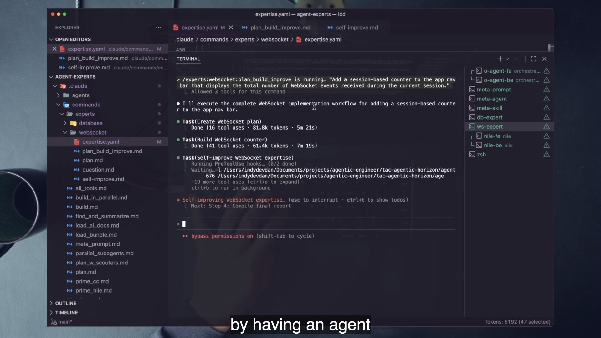
Dan also asks the same WebSocket question of three experts. One run fails. That failure is not an embarrassment hidden from the lesson; it is the reason to scale compute when confidence matters. Non-deterministic runs surface different evidence, omissions, and failure modes. A composer can compare survivors instead of treating the first fluent answer as certainty.
4 · Name it
5 · Worked example — two fan-outs, two goals
Plan → build → learn
Each agent has one prompt and one purpose. Artifacts cross boundaries in order. The goal is context protection and clean composition.
Question → N expert answers
Each agent receives the same question. Answers are compared or composed. The goal is confidence through independent attempts.
Sequential specialists should not vote on whether to continue; their outputs feed the next stage. Parallel peers should not each mutate the same working tree; the lesson uses them for question answering. The purpose determines safe topology.
6 · You try — design the hand-off ledger
7 · Common fail + fix
Symptom: five agents return five long answers and the human reads all five from scratch. Or three build agents race in one worktree. Token use rises while confidence and safety remain undefined.
Fix: state the purpose before fan-out. Use fresh sequential contexts for different stages and explicit artifacts for hand-off. Use independent read-only peers for confidence, then compare source citations, factual agreement, and unique findings with a defined composer.
8 · Current practice
Official Claude examples describe sub-agents as separate contexts with their own instructions, tools, and expertise, and highlight specialization, context separation, and parallelization. SDK features also expose hooks, permissions, structured outputs, and setting-source controls. Those affordances enrich the machinery; the conceptual reason for fresh workers is unchanged.
9 · Retrieval
Why are plan, build, and self-improve fresh agents?
Each gets a narrow purpose and isolated context, protecting the top-level orchestrator from large tool histories.
Why ask three experts the same question?
Independent runs can fail differently or surface different evidence; composition can increase confidence for high-stakes answers.
What is unsafe about parallelizing build the same way?
Multiple mutating agents can conflict in one working tree; the lesson’s confidence fan-out is read-only question work.
10 · Teach-back
Draw two fan-outs. One must show different sequential purposes and small artifacts. The other must show the same read-only question sent to independent peers. Explain why their composition rules differ.
Point the same loop at user behavior instead of code and the expertise file becomes a personalization substrate. Nile is a visible seed of that product class, not a production recommendation recipe.
1 · Hook — the interface remembers your actions
A database expert accumulates validated knowledge about one subsystem. A product expert can accumulate a narrow model of one user: products viewed, added to cart, and checked out. The next interface generation uses that state to decide which sections and products to stream.
The architecture creates a sharper responsibility. Code expertise can be checked against code. User expertise is behavioral data used to shape an experience. The demo therefore teaches the loop visually while Dan preserves a latency caveat: this is a seed, not proof that an agent should replace a production recommender.
2 · Picture — behavior becomes interface context
3 · Story — before and after one useful action
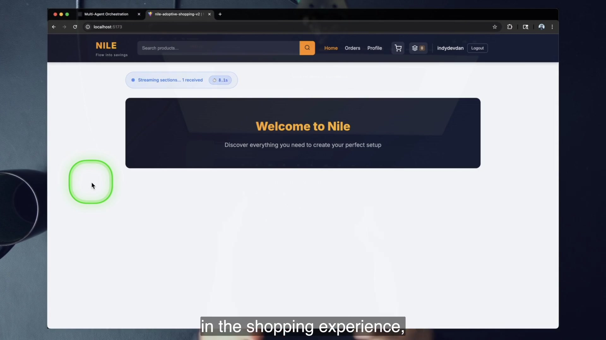
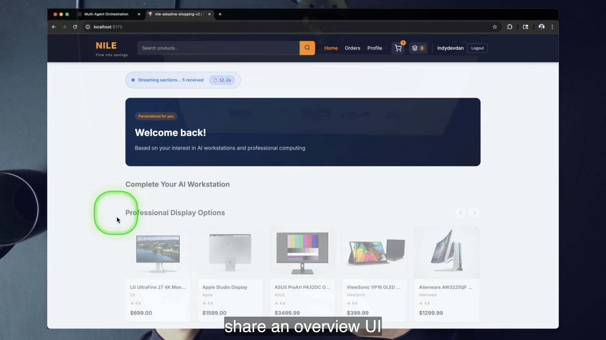
The backend model stores viewed_products, added_to_cart, and checked_out inside expertise_data, plus improvement count and timestamp. The streaming system prompt receives dynamic behavior variables and static generation ranges, then uses tools such as stream_section and find_related_products.
4 · Name it
5 · Worked example — trace the real Nile files
server/src/models/expertise.pyDefines the per-user Expertise record and stores the mental-model payload in a SQLAlchemy JSON column in the checked-out SQLite implementation.
server/src/services/agent_expert.pyUses the Claude Agent SDK client and tools to generate and stream personalized sections.
shopping_expert_streaming_system_prompt.mdReceives viewed, added, and checked-out signals plus SECTIONS_RANGE and PRODUCTS_PER_SECTION_RANGE.
client/src/components/layout/ExpertisePanel.vueExposes the Control-K panel that makes the mental model visible during the demo.
The Nile README uses JSONB language, while the final implementation imports SQLite and SQLAlchemy JSON. The chapter follows the checked-out code for lab claims. The conceptual per-user mental model does not depend on the storage engine.
6 · You try — label product-loop evidence
7 · Common fail + fix
Symptom: the personalized screenshot becomes proof that an LLM agent should serve every real-time recommendation. Latency, consistency, evaluation, privacy, and fallback behavior disappear from the argument.
Fix: preserve Dan’s caveat. Study Nile as Act/Learn/Reuse made visible. Notice the loading indicators and streamed sections that mask delay. Prototype the product class; do not claim the demonstration supplies a production architecture.
8 · Current practice
Streaming component protocols, structured tool calls, and faster small models make adaptive interfaces more practical than a static screenshot suggests. The durable product question is still whether the experience remains useful under delay, partial generation, errors, and cold-start data. Keep deterministic recommendation and graceful fallback paths available when the agent cannot meet the interaction budget.
9 · Retrieval
What is the per-user mental model in Nile?
Expertise data containing viewed, added-to-cart, and checked-out product signals, plus improvement metadata.
Where does Reuse appear?
The next generative-UI request receives the stored behavior signals and uses them to stream personalized sections.
What caveat must remain attached to Nile?
It is a latency-bound seed of a product class, not a demonstrated production recommendation engine.
10 · Teach-back
Explain Nile with the same three verbs used for code. Then name two differences between user expertise and codebase expertise: source-of-truth shape, risk, latency, or privacy are all valid if tied to the files.
The pattern becomes more valuable as a domain grows complex, risky, distinctive, and changeable. Those same properties make false expertise more dangerous, so the operator must be able to evaluate the mental model.
1 · Hook — the scary code is the candidate
Billing, security, databases, DevOps, multi-way integrations, APIs, data science, and cross-service type synchronization are exactly where repeated domain rediscovery is expensive. Dan says his billing experts have caught revenue-changing details. The claim is not that learned state removes risk; it is that a validated, reusable mental model becomes more valuable where generic cold starts repeatedly miss domain-specific edges.
But an operator who cannot recognize a wrong billing claim cannot safely govern a billing expert. High value and high review responsibility arrive together.
2 · Picture — the decision matrix
Simple, familiar, or brand-new code. A generic agent can inspect the current shape without carrying much specialized history.
Strong expert candidate: billing, security, databases, integrations, or synchronized types—with validation and review gates.
Use caution. Reusable checklists may help, but ask whether a changing mental model adds value beyond enforced rules and tests.
Prototype only if repeated rediscovery costs more than seeding, maintenance, tokens, and false-expertise review.
3 · Story — the unframed decision beat
From about 48:09 through 59:20, Dan works through seeding, source-of-truth objections, finite context, false expertise, over-granularity, too many experts, and the use/don’t-use boundary. The frame plan intentionally leaves this narration unframed because a decision matrix teaches the relationships more clearly than a bullet-slide screenshot.
His strongest refusal is epistemic: if you do not understand the problem, do not build an expert for it. The agent can store confident mistakes, and you will lack the mental model needed to challenge them. In that case, an expert makes the problem worse.
4 · Name it
5 · Worked example — synchronized types
The course repository requires apps/orchestrator_db/models.py to stay synchronized with migrations and distributes models through sync_models.py. This is a good expert-shaped boundary: a small set of high-value files, clear drift modes, repeated cross-application consequences, and ground truth that can be inspected.
Contrast a static helper script with an obvious shape and no repeated change. A fresh generic agent can read it cheaply. Seeding and maintaining expertise would add ceremony without a meaningful compounding advantage.
6 · You try — write two yeses and one no
Choose three real course-repository domains. For each, score change rate, risk, codebase-specific uniqueness, and your ability to evaluate the agent’s claims. Select two expert candidates and one refusal. Your refusal is stronger if a plain agent or a deterministic check solves the job with less learned-state risk.
7 · Common fail + fix
Symptom: the domain is important but poorly understood, so you ask the agent to build its own expertise and then accept the result because no human can judge it.
Fix: use generic exploration first. Build your own minimal mental model, establish ground-truth tests and review criteria, narrow the domain boundary, and only then seed an expert. Importance alone is not sufficient authorization.
8 · Current practice
For a critical expert, separate “the agent proposed new expertise” from “the system now relies on it.” Add syntax checks, representative question evals, code-citation validation, review of removals as well as additions, and periodic re-seeding when the domain changes shape. These controls mitigate false expertise; they do not eliminate it.
9 · Retrieval
Name three strong expert domains from the lesson.
Any three of billing, security, database, DevOps, complex integrations, ML/data science, APIs, or cross-service type synchronization.
Name one strong refusal case.
A static/simple problem, a brand-new familiar code shape, or any domain the operator cannot evaluate.
Why is “I do not understand it” especially dangerous?
You cannot recognize false expertise or judge whether the self-maintained model is improving the right things.
10 · Teach-back
Answer Dan’s closing question with a qualification. Explain when you want an expert that remembers and learns, then name one case where a fresh generalist is the safer and cheaper choice.
The course’s raw prompt files remain the clearest way to see Act, Learn, and Reuse. Current tooling adds always-on memory, on-demand Skills, SDK sub-agents, and managed execution. Use those surfaces to sharpen scope and governance, not to rename the same cold-start agent.
CLAUDE.md is human-written instruction loaded into sessions. Auto memory is agent-written repository knowledge and also has startup behavior. Skills load their bodies on demand. Dan’s detached expertise remains useful when one narrow domain needs its own validation and maintenance policy.
Current custom commands and Skills share invocation behavior; existing command files keep working. A Skill adds supporting files, automatic relevance, and progressive disclosure. Package an expert there when discoverability and on-demand loading help, while keeping the mental model and Learn rubric observable.
The Agent SDK can load Claude Code features, mount Skills, define sub-agents, apply hooks and permissions, and return structured results. That is a deployment surface for the same loop. Keep stage boundaries and learned-state evidence visible in production code.
commands + expertiseSkill + referencesSDK subagentseval + diff gateAt every step, run the same audit. What useful action creates evidence? What procedure decides whether evidence belongs in learned state? What exact artifact changes? What later execution loads it? What ground truth overrides it? If packaging makes those answers harder to find, the abstraction is working against the lesson.
Model IDs in the frames are period detail. The recording shows course-era Claude 4.5-family identifiers and swaps a larger model for a smaller one to improve speed. Do not copy those IDs as current recommendations. Choose an available model based on task difficulty, latency, cost, and evaluation evidence; the learning-loop architecture does not depend on the displayed names.
Work only in the course codebase. You will map two experts, run read-only Reuse, run controlled Learn, reconstruct Dan’s completed counter loop from real files, and seed a new header-stats expert whose substantive expertise is written only by self-improve.
disler/agent-experts only; no external lab repositories.| Checkpoint | Evidence | Points |
|---|---|---|
| 1 · Map | Correct Act/Learn/Reuse/orchestrator/mental-model labels for both experts | 10 |
| 2 · Reuse | Read-only database answer, expertise first, code validation, exact citations | 20 |
| 3 · Learn | Self-improve run, line budget, valid YAML, diff or justified stable result | 20 |
| 4 · Archaeology | Five-row counter evidence trace across plan, source, and expertise | 20 |
| 5 · Seed | New blank-start header-stats expert written by self-improve and queried safely | 20 |
| 6 · Teach | Closed-notes oral explanation and use/don’t-use judgment | 10 |
git clone https://github.com/disler/agent-experts.git
cd agent-expertsCLAUDE.md completely. Record four rules: real tests/no mocks; keep database models and migrations synchronized; use uv, never raw Python; do not commit unless explicitly asked.claude --version
uv --version
git --version
node --versiongit status --short. Preserve pre-existing work; the lab should not make unrelated files part of its evidence.python3 YAML check, which conflicts with the repository’s uv rule. The lab uses a uv run --with pyyaml python check. The generated startup Skill also names a stale backend port; the checked-out default is 9403 and the frontend is 5175..claude/commands/experts/database/ and .claude/commands/experts/websocket/..claude/commands/build.md. The WebSocket expert has no local build.md; its orchestrator invokes the shared base command.question.md, the database Reuse order, the WebSocket build task, and the WebSocket self-improve true task.plan_build_improve.md is labeled orchestration, not the low-level build prompt.Run this slash command in Claude Code:
/experts:database:question "Does information flow between our database tables? Cite exact files and lines and include a Mermaid ER diagram."apps/orchestrator_db/models.py, migrations, and relevant database implementation.git status --short again. The database question prompt explicitly forbids writing, editing, or creating files.Run:
/experts:database:self-improve falseThen inspect, without modifying expertise:
git diff -- .claude/commands/experts/database/expertise.yaml
wc -l .claude/commands/experts/database/expertise.yaml
uv run --with pyyaml python -c \
"import pathlib,yaml; yaml.safe_load(pathlib.Path('.claude/commands/experts/database/expertise.yaml').read_text())"MAX_LINES: 1000.The counter already exists in the final course tree. Do not rerun the recording’s request and pretend any no-op is a failed Act. Reconstruct the completed loop from these artifacts:
specs/websocket-event-counter-nav-bar.mdfrontend/src/services/chatService.tsfrontend/src/stores/orchestratorStore.tsfrontend/src/composables/useHeaderBar.tsfrontend/src/components/AppHeader.vue.claude/commands/experts/websocket/expertise.yamlwc -l on chatService.ts. Compare 193 source lines with the 194-line expertise claim. Explain why code wins.cd apps/orchestrator_3_stream/frontend
npm install
npm run buildbuild, not the type-check script named in the old plan.
Create this new expert inside the course repository:
.claude/commands/experts/header-stats/
├── expertise.yaml
├── question.md
└── self-improve.mdexpertise.yaml as an empty carrier. Do not add headings, comments, or seed facts.chatService.ts, orchestratorStore.ts, useHeaderBar.ts, and AppHeader.vue. Set a roughly 300-line limit and retain the repository’s concise/actionable rule./experts:header-stats:question "Where does the WS Events value come from, and exactly when does it reset?"Without notes, answer:
Recognition is not mastery. Close the chapter, answer from memory, then reveal. Misses should send you to a specific file or loop stage rather than to a vague reread.
1. What structural problem does an agent expert solve?
Ordinary sessions execute and forget; the expert stores validated domain learning for later reuse.
2. Define an agent expert in one sentence.
A generic narrow agent wired into Act → Learn → Reuse over a persistent expertise file it maintains.
3. Why is expertise not a source of truth?
It is a compressed, fallible navigation model; the code that runs governs current behavior.
4. Decompose “self-improving template meta prompt.”
Meta builds another prompt/artifact, template fixes purpose and structure, and self-improving updates isolated state for later use.
5. Which database file provides Reuse?
.claude/commands/experts/database/question.md.
6. Which shared file provides WebSocket Act?
.claude/commands/build.md, invoked by the WebSocket orchestrator.
7. What flag connects the WebSocket build diff to Learn?
The orchestrator runs /experts:websocket:self-improve true.
8. Reconstruct the seven self-improve stages.
Optional diff, read expertise, validate code, identify discrepancies, update expertise, enforce line limit, validate YAML and report.
9. What exact real drift example appears in the final tree?
WebSocket expertise calls chatService.ts 194 lines while the current file contains 193.
10. A Skill generates excellent prompts but retains nothing. Expert?
No. It is useful meta-agentics that acts but does not learn and reuse persistent state.
11. Self-improve changes nothing after full validation. Failure?
No. A stable aligned model is a valid result; forced churn would reduce quality.
12. An engineer fixes stale YAML directly. What remains broken?
The maintenance rubric that failed to detect or represent the fact, so the error class can recur.
13. A partial database expert refreshes after another workflow changes code. Contradiction?
No. Partial means it lacks its own Act, not that Learn cannot observe external changes.
14. Five agents answer independently, but nobody compares citations. What is missing?
A composition rule. Compute increased; confidence did not become measurable.
15. How does TAC-3 template engineering appear here?
The expert prompts have stable purpose, variables, instructions, workflow, and report structures.
16. How does TAC-6 one agent, one prompt, one purpose appear?
Plan, build, and self-improve run as separate fresh specialists with narrow purposes.
17. How do the core four constrain an expert?
Expert packaging still reduces to context, model, prompt, and tools; the learning loop structures how those primitives persist and act.
18. When is a generic agent preferable?
When the problem is static/simple/new, repeated learning adds little, or the operator cannot evaluate the domain safely.
Without notes, teach a colleague for seven minutes:
Expert pass: your listener can open an unfamiliar expert, locate learned state and maintenance, identify any missing loop stage, and name the ground truth used to validate it.
Use these terms as architecture labels, not marketing adjectives. Each should point to an observable file, stage, or behavior.
MAX_LINES: 1000.